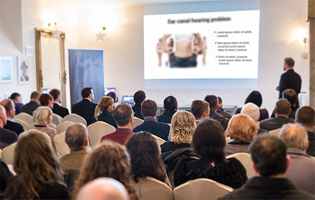
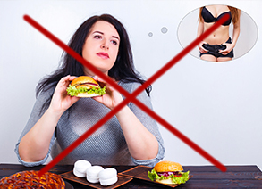

eliminación de depósitos intestinales, purificación del organismo de toxinas, pérdida de apetito excesivo, aproximadamente 5 kg menos
¡Se acabó la época del sobrepeso!
Un mexicano creó el tratamiento que tiene una fuerte potencia adelgazadora: 14 kg en 1 mes, sin matarte de hambre, sin la necesidad de hacer ejercicio, sin el efecto yo-yo

Los dietistas temen que podrían perder sus puestos de trabajo. ¿Es posible que este nuevo método para adelgazar los haga totalmente prescindibles? Renombrados especialistas en nutrición no tienen dudas. Tras la creación de esta fórmula bifásica natural por el profesor español ha llegado la esperada revolución en la lucha contra el sobrepeso.
Ya más de 14 mil usuarios del tratamiento perdieron en promedio 14 kg en 28 días: sin esfuerzo, de manera segura, sin el efecto yo-yo. En consecuencia, disminuyeron los riesgos de infarto y derrame en 185%, bajaron 15 veces sus niveles del colesterol malo, y pudieron protegerse de la atereoesclerosis. Recuperaron la figura atractiva, la autoestima y una excelente condición física. ¿Cómo es posible?
El prof. Adrián Morales (experto en biología molecular) decidió librar a su esposa de la obesidad y de los complejos. Fue el comienzo de una revolución en la lucha contra el sobrepeso. El profesor, después de un año de investigaciones avanzadas en el laboratorio, desarrolló una fórmula natural, segura y fácil de aplicar para adelgazar. Gracias a ella, la esposa del profesor perdió 26 kg en menos de 2 meses y, como ella misma admite con orgullo, "consiguió tener figura de modelo".
Las revistas médicas profesionales ya han llamado este tratamiento "logro pionero en dietética" , y el profesor Flores ya ha recibido varios premios prestigiosos por su descubrimiento científico. Gracias al funcionamiento de su fórmula bifásica, incluso las personas con mucho sobrepeso o que sufren por el sobrepeso desde hace muchos años (independientemente de sus causas) pueden perder aproximadamente 14 kg en un mes: con mucha eficacia y sin tener que matarse de hambre ni hacer ejercicio.
"¡Seguir una dieta es un sufrimiento y, además, es dinero tirado por la ventana!" ¿Cuáles son las razones para pensar así?
Estas palabras las confirman más de 14.000 usuarios satisfechos de la fórmula adelgazante natural bifásica, que ya se habían sometido al tratamiento y disfrutan ahora de una silueta delgada. Es por eso que decidimos analizar más a fondo las dietas que se conocen. Y, más precisamente, verificar por qué no brindan los resultados deseados. Aquí están las conclusiones:
La mayoría de las dietas no las preparan los expertos
Para perder 2 kg de forma permanente, hay que estarse matando de hambre durante 2 meses y medio aproximadamente. Esto significa que para llegar al peso deseado,se necesitan incluso varios años de renuncias . Dejar de complacerse y luchar contra uno mismo para no sentirse tentado por la pizza, el postre o el pastel favorito. Y todo esto porque el 98% de los programas de dieta están organizados por aficionados y amateurs totales. Personas que no tienen idea del funcionamiento del cuerpo, el sistema digestivo y la nutrición responsable. Estas dietas son dañinas para el cuerpo, peligrosas para la salud y completamente ineficaces.
Las dietas debilitan el organismo y disminuyen su resistencia
Estar a dieta da como resultado deficiencia de vitaminas y microelementos. El cuerpo pierde energía, por lo que nos sentimos cansados, irritables, con sueño . La resistencia del organismo a virus y bacterias disminuye drásticamente, por lo cual contraemos enfermedades con mucha facilidad.
Los productos dietéticos son peligrosos para la salud
Los fabricantes intentan atraernos con los productos tipo ''fit''. Desgraciadamente, aunque contengan mucha fibra, también tienen muchísimo azúcar que - como es bien sabido - engorda más que las hamburguesas. A su vez, los productos que no contienen azúcar, contienen ¡ el aspartamo que es cancerígeno !
Hacer una dieta significa pasar hambre, sacrificarse, sentir remordimientos de conciencia
La lucha constante contra el apetito y negarse el placer de comer es algo imposible para superar . Por otro lado, las situaciones en las que el apetito imparable nos rompe durante una comida familiar o una cena entre amigos son la causa de muchos remordimientos.
Las dietas absorben muchísimo dinero
Contratar a un dietista con experiencia cuesta 3000 Mex$ al mes como mínimo. A su vez, todos los productos dietéticos, bajos en calorías y "fit" son simplemente caros. En consecuencia, gastamos hasta 4 veces más dinero en productos "dietéticos" que en compras normales. Para mantener el peso, tendríamos que comer de esta manera toda nuestra vida. Ninguna billetera podría soportarlo.
Después de estar a régimen aparece el efecto yo-yo
El organismo, debilitado por pasar hambre, empieza a almacenar energía para después, lo cual hace que el metabolismo se vuelva más lento, hasta frenar por completo. En consecuencia, después de la dieta el cuerpo regresa al peso anterior aún más rápido que lo que duró el periodo de adelgazar.
Precisamente por eso, la fórmula bifásica para adelgazar del prof. Morales es una verdadera revolución en la lucha por una figura esbelta
Estar a régimen le quita a la gente la salud, la energía y el dinero. Contar continuamente las calorías, cuidar las horas de las comidas y negarse el placer de comer. El hambre que molesta, la fatiga y la destrucción del cuerpo . Pagamos este enorme precio por ... una decepción, porque los resultados suelen ser insignificantes. Casi de inmediato aparece el efecto yo-yo, que destruye todo el esfuerzo y las renuncias realizadas a lo largo del tiempo.
La fórmula natural bifásica para adelgazar del prof. Morales funciona totalmente al revés. No hay que negarse nada, vigilar qué y cuándo se come o sufrir por el hambre persistente. La quema de grasa se realiza de manera automática. Como lo describió uno de los encuestados: "¡Estás adelgazando mientras ves la tele!" Además, el tratamiento normaliza el metabolismo y bloquea permanentemente el efecto yo-yo . ¡Y todo esto cuesta menos que una lata de coca-cola al día!
Ahora todos pueden adelgazar sin esfuerzo, rápido y de manera segura
La fórmula bifásica para adelgazar del prof. Morales ya está disponible en la venta minorista bajo el nombre de . La fórmula tiene forma de cápsulas efervescentes que hay que disolver en agua y beber (esto, a su vez, contribuye a una hidratación adecuada, tan importante para la buena condición organismo). El uso del método es completamente seguro, como lo han demostrado las pruebas adicionales realizadas por un centro de investigación estadounidense en Chicago. Estos estudios también han mostrado que el tratamiento tiene más del 98% de eficacia . Con su ayuda, las personas de 38-93 años, en solo 28 días adelgazaron un promedio de 14 kg. Independientemente de la edad, del tiempo que sufrían por el sobrepeso o sus causas.
Eficacia comprobada
Ya después de unas pocas horas desde el primer uso, estas personas empezaron a limpiar el organismo de acúmulos dañinos y toxinas, gracias a lo cual redujeron el apetito y pudieron empezar la fase de la quema intensa de calorías. En los días siguientes, los participantes de las pruebas dejaron de comer a deshoras a causa del estrés y combatieron completamente sus ataques de hambre . A continuación, observaban cada día cómo disminuía su peso, y y ¡cómo perdían más y más centímetros en la cintura, la cadera y los muslos, incluso varios centímetros al día!
Pero esto no es todo. El colesterol malo y el azúcar disminuyeron. Los participantes de las pruebas tenían en promedio 3 veces más de energía y se sentían 5 veces mejor que antes de usar la fórmula para adelgazar del prof. Morales.
Los efectos documentados del tratamiento hablan por sí solos:
reducción de la sensación de hambre, mejora del metabolismo, aceleración de la quema de calorías, otros 4 kg menos
quema automática del tejido adiposo, disminución del colesterol y del azúcar, otros 3 kg menos
3 veces más energía, configuración del metabolismo, bloqueo del efecto yo-yo, aproximadamente 2 kg menos (14 kg en total en 1 mes)
1. semana
2. semana
3. semana
4. semana
1. semana - eliminación de depósitos intestinales, purificación del organismo de toxinas, pérdida de apetito excesivo, aproximadamente 5 kg menos
2. semana - reducción de la sensación de hambre, mejora del metabolismo, aceleración de la quema de calorías, otros 4 kg menos
3. semana - quema automática del tejido adiposo, disminución del colesterol y del azúcar, otros 3 kg menos
4. semana - 3 veces más energía, configuración del metabolismo, bloqueo del efecto yo-yo, aproximadamente 2 kg menos (14 kg en total en 1 mes)
Pilar Hernández (37 años) de Mérida es una de las primeras personas en México que ha sufrido la metamorfosis con :

"Hace poco me avergonzaba de rollitos de grasa y los escondía bajo capas y capas de ropa holgada. Había intentado adelgazar en numerosas ocasiones, sin éxito. Incluso consulté a un dietista. Para pagar la consulta, gasté una parte importante de mi sueldo, pero no me ayudó en absoluto. Tenía que hablarle de cada galleta, cada copa de vino. ¿Ejercicio? ¿Después de un día duro en el trabajo tendría que ir al gimnasio? ¿Y quién se encargaría de la casa, de los niños, del perro? Por suerte, aún a tiempo me enteré de . Y ahora sé que si no hubiera utilizado este tratamiento, habría cometido el error de mi vida. Estaba gorda como una vaca, pero me bastaron 4 semanas para que me viera más delgada que mi sobrina. No moví un solo dedo, solo me tomaba esta fórmula bifásica para adelgazar, a la misma hora del día. He bajado de la talla 44 a la 38, he recuperado mi autoestima y me siento fenomenal, como nunca antes. Mis compañeras de trabajo me envidian la figura esbelta. ¡Lo recomiendo! "
¿Por qué sufrir debido al sobrepeso o estar matándose con dietas, si es posible adelgazar con de manera fácil, rápida y económica ?
La eficacia de la fórmula bifásica para adelgazar ha sido comprobada sin ninguna duda por un centro de investigaciones de Chicago. El profesor Morales no deja de recibir opiniones positivas de expertos renombrados, así como premios prestigiosos por sus logros científicos.
La buena noticia es que se puede recibir la fórmula bifásica para adelgazar del prof. Morales por participar en el club de los descuentos con el financiamiento $1010 más barato. La oferta especial está vigente hasta . El tratamiento se puede recibir mediante la página que se indica más abajo.


Comentarios
Lee los comentarios al artículo: "¡Se acabó la época del sobrepeso! Un mexicano creó el tratamiento que adelgaza de forma extrema...
Tomás
y se dice que los mexicanos no nos destacamos a nivel mundial. Felicitaciones a nuestro compatriota
Juana
yo he usado este tratamiento para adelgazar, lo he recibido por participar en el club de descuentos, me ha costado tan poquito, ¡y he adelgazado finalmente! me siento como nueva. lo recomiendo de todo corazón.
Martita
yo también lo he probado y he adelgazado, pese a las tendencias genéticas para engordar. Es muy fácil y ya he contado todo sobre mi metamorfosis en mi blog y lo recomiendo para todos :)
Sofía
ya había caído en la trampa de muchos suplementos para adelgazar. obvio, nada me ayudó, solo perdí dinero. Pero tengo que ser sincera, este es el primer método que ha funcionado conmigo. Apenas llevo una semana usándolo, pero dejé de comer por las noches y mi apetito disminuyó. Como menos, más sano, y me siento ligera. Y no estoy cuidando para nada lo que como. Y ya perdí 4 kg, la celulitis desapareció, ¡no puedo esperar la cuarta semana!!!!!
José
señoras y señores. tengo que opinar también yo porque sufrí por el sobrepeso durante 7 años. Como cualquier hombre disfruto de las chelas, me gusta comer bien. Mi esposa me estaba molestando sin parar, me decía que hiciera algo con ello, porque tenía el colesterol alto y ser gordo no es sano. Hasta que mi hija me trajo estas pastillas de los Estados Unidos, y pues las probé para que me dejaran en paz. Pero no cambié mi estilo de vida. Y perdí 10 kg en 3 semanas, y mis resultados médicos están bien. Así que estoy más sano y además liberado de las quejas de mi señora
Andrés
yo también use y me ha funcionado de maravilla. Llevo solo dos semanas usando el tratamiento, pero ya siento que los pantalones me quedan holgados. Tenéis que verificarlo vosotros mismos, porque yo nunca he visto una opinión negativa de este método para adelgazar
María
metiéndome en esta página no pensé que leería maravillas de este tipo. Tengo que hacerme con este tratamiento. Ya estoy harta de esta barriga asquerosa y los muslos gordos. ¡Finalmente hay algo que funciona!
Dolores
yo tengo menos 16 kg. Hace 30 días mi peso fue de 78 kilos, hoy son 62. Os recomiendo que lo pidáis mientras haya promoción.
Miguel
hoy en día todos tenemos el cuerpo lleno de toxinas. No es de extrañar que una de dos personas tiene sobrepeso. Es bueno que exista un método que limpia el organismo y quema la grasa
Ana
tengo una pregunta: qué habéis usado. ¿Hay alguien aquí quien sufra por el sobrepeso desde la infancia (es decir, no por otras razones, tipo embarazo, medicinas, sino lo tiene desde pequeño) y adelgazó con este método?
Juan
@Ana sí, yo por ejemplo. En mi caso es hereditario, todos somos gordos. Pero bueno, después de 3 semanas con ya no me parezco a mi familia :)
Ana
@Juan te agradezco la respuesta. Me arriesgaré yo también y lo probaré, de todas formas no me pierdo nada...
Rubí
yo con el tratamiento del profesor perdí 15 kg :) muchos saludos, ¡lo recomiendo!
eva
lo usaría desde ya, pero tengo mis reparos, no sé si funciona. Y yo ya gasté mucho en métodos que no valen para nada
eva
ayyyy!!! acabo de leer que este tratamiento puede conseguirse con la garantía triple de satisfacción, así que no hay nada de que preocuparse. Lo voy a probar yo mismo, ojalá y me ayude :)
Antonio
mi madre perdió peso con estas pastillas, después de 20 años de problemas graves de sobrepeso
félix
estoy esperando el envío con el tratamiento, pronto les voy a escribir sobre los efectos